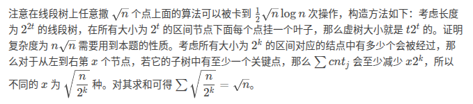

古人总说：『日出而作，日落而息』。既然如此，在冬天的阴天就应该安眠一个下午。
但这样总有被误认为冬眠动物的风险。实际上是全年无休地努力摸鱼着！
C. meat
https://www.becoder.com.cn/contest/6752/problem/3
给定一个 \(n\) 个点 \(m\) 条边的简单无向图，点有点权，问图中所有四元环的权值和，对 \(10^9+7\) 取模。
\(n,m\le 10^5\)。
容易想到 meet in middle 的做法：把四元环 \((1,2,3,4)\) 拆解为 \(1-2-3\) 和 \(1-4-3\) 两个部分，从 \(1\) 出发，找到所有和 \(1\) 的距离为 \(2\) 的点 \(3'\)，在 \(3\) 处完成统计。
做这么一件事：在每次『从 \(u\) 出发，找到所有和 \(u\) 的距离为 \(2\) 的点』之后，从图中删去 \(u\)。容易发现删点不会影响正确性。
注意这里要用 BFS 而非 DFS 保证复杂度。
钦定按点的度数从大到小做这个过程，则复杂度为 \(O(m\sqrt m)\)。证明参考三元环，考虑根号分治：
当点 \(u\) 的度数 \(deg_u>\sqrt m\) 时，由于 \(\sum deg=2m\)，这样的点有 \(O(\sqrt m)\) 个；暴力 BFS 两步时，最劣复杂度为 \(O(m)\)。故该种情况下复杂度为 \(O(m\sqrt m)\)。
否则，\(deg_u\le \sqrt m\) 时，由于度数更大的都被删除了，\(u\) 能 BFS 到的点度数一定比 \(u\) 更小。
注意区分这一步和三元环重定向的区别：此时仍然允许在第 2 个点 \(\to\) 第 3 个点时，由小度数走向大度数，否则无法完全统计。三元环能重定向的原因是，不管如何重定向，三元环中总能找到一条 \(a\to b\to c\) 的有向路径。
故此时两步 BFS 的复杂度上界为 \(O({deg_u}^2)\)。
考虑整体复杂度上界，即找到一种对 \(2m\) 的划分方式，使得每一个元素不超过 \(\sqrt m\)，且最大化 \(\sum {deg_u}^2\)。最劣情况显然是全部取 \(\sqrt m\)，此时复杂度为 \(O(m\sqrt m)\)。
综上，整体复杂度为 \(O(m\sqrt m)\)，而且非常不满。
By the way, 无向图三元环计数？
按照大度数 \(\to\) 小度数对边重定向。由于三元环需要的信息更少，只需要 check『走两步能走到的点』和『走一步能走到的点』的交集，但仍需要两步 BFS。
根号分治证明复杂度，证明过程几乎一致。不赘述。
#include <bits/stdc++.h>
const int mod = 1e9 + 7;
int main() {
#ifdef ONLINE_JUDGE
std::ios::sync_with_stdio(false);
std::cin.tie(nullptr), std::cout.tie(nullptr);
std::freopen("meat.in", "r", stdin);
std::freopen("meat.out", "w", stdout);
#else
std::freopen(".in", "r", stdin);
std::freopen(".out", "w", stdout);
const auto stime = std::chrono::steady_clock::now();
#endif
int n, m;
std::cin >> n >> m;
std::vector<long long> a(n + 1);
for (int i = 1; i <= n; ++i)
std::cin >> a[i];
std::vector<int> deg(n + 1), id(n);
std::vector<std::vector<int> > g(n + 1);
for (int x, y; m--; ) {
std::cin >> x >> y;
++deg[x], ++deg[y];
g[x].push_back(y), g[y].push_back(x);
}
std::iota(id.begin(), id.end(), 1);
std::sort(id.begin(), id.end(), [&](int i, int j) { return deg[i] > deg[j]; });
std::vector<long long> s(n + 1);
std::vector<int> tag(n + 1), cnt(n + 1);
auto res = 0ll;
for (auto i : id) {
std::vector<int> pos;
tag[i] = 1;
for (auto j : g[i])
if (!tag[j])
for (auto k : g[j])
if (!tag[k]) {
pos.push_back(k);
++cnt[k], (s[k] += a[j]) %= mod;
}
for (auto j : pos)
if (cnt[j]) {
res += s[j] * (cnt[j] - 1) % mod;
res += (a[i] + a[j]) % mod * (cnt[j] * (cnt[j] - 1) / 2 % mod) % mod;
cnt[j] = s[j] = 0;
}
res %= mod;
}
std::cout << res << '\n';
#ifndef ONLINE_JUDGE
std::cerr << std::fixed << std::setprecision(6) << std::chrono::duration<double> (std::chrono::steady_clock::now() - stime).count() << "s\n";
#endif
return 0;
}B. port
https://www.becoder.com.cn/contest/6767/problem/2
给定 \(n\times n\) 的棋盘，初始放置了 \(k\) 个棋子 \((x_i, y_i)\)。现在可以额外放置若干棋子，问有多少种方案满足：
- 在最终的棋盘上，任意 \(m\times m\) 的矩形中，恰有一个棋子。
对 \(998244353\) 取模。
多测，\(T\le 2\times 10^5,m\le n\le 10^6,k\le \min(n^2,2\times 10^5),\sum k\le 2\times 10^5\)。
需要高强度手玩，然后概括出以下事实：
- 两个棋子不冲突的充要条件：行差为 \(m\) 的倍数或列差为 \(b\) 的倍数。
- 初始棋子不冲突的充要条件：任意两个棋子满足上一条。
- 合法局面的充要条件：每一行的棋子的列差均为 \(m\)，或每一列的棋子行差均为 \(m\)。
这样，只有第一行 / 列的选取是相对自由的。由此可以得到 \(k=0\) 时的答案：
\[ 2\times(m^{\left\lfloor\frac{n}{m}\right\rfloor}\times(m-n\bmod m)+m^{\left\lfloor\frac{n}{m}\right\rfloor+1}\times(n\bmod m))-m^2 \]
对于 \(k\ne 0\) 的情况，统计两种填数方式一路上可以塞数的位置，顺便判定合法性即可。
#include <bits/stdc++.h>
const int mod = 998244353;
int main() {
#ifdef ONLINE_JUDGE
std::ios::sync_with_stdio(false);
std::cin.tie(nullptr), std::cout.tie(nullptr);
std::freopen("port.in", "r", stdin);
std::freopen("port.out", "w", stdout);
#else
std::freopen(".in", "r", stdin);
std::freopen(".out", "w", stdout);
const auto stime = std::chrono::steady_clock::now();
#endif
int T;
auto qkp = [&](long long first, int second) {
auto res = 1ll;
for (; second; (first *= first) %= mod, second >>= 1)
if (second & 1)
(res *= first) %= mod;
return res;
};
for (std::cin >> T; T--; ) {
int k;
long long n, m;
std::cin >> n >> m >> k;
std::vector<std::pair<int, int> > a(k + 1);
for (int i = 1; i <= k; ++i)
std::cin >> a[i].first >> a[i].second;
auto res = 0ll;
if (m == 1) {
std::cout << 1 << '\n';
continue;
}
if (k == 0) {
auto res = qkp(m, n / m) * (m + mod - n % m) % mod + qkp(m, n / m + 1) * (n % m) % mod;
res = 2 * res % mod + mod - m * m % mod;
std::cout << res % mod << '\n';
continue;
}
std::sort(a.begin() + 1, a.end());
int la = 0, now = 0;
bool flag1 = true, flag2 = true;
for (int i = 1, j = 1; i <= k; i = j + 1) {
now = now + std::max(0ll, (a[i].first - la - 1) / m);
if (la && (a[i].first - la) % m != 0)
flag1 = false;
la = a[i].first;
for (j = i; j <= k && a[i].first == a[j].first; ++j);
--j;
for (int k = i + 1; k <= j; k++)
if ((a[k].second - a[k - 1].second) % m != 0)
flag1 = false;
i = j;
}
now += (n - la) / m;
if (flag1)
(res += qkp(m, now)) %= mod;
la = 0, now = 0;
std::sort(a.begin() + 1, a.end(), [&](auto &x, auto &y) { return x.second == y.second ? x.first < y.first : x.second < y.second; });
for (int i = 1, j = 1; i <= k; i = j + 1) {
now = now + std::max(0ll, (a[i].second - la - 1) / m);
if (la && (a[i].second - la) % m != 0)
flag2 = false;
la = a[i].second;
for (j = i; j <= k && a[i].second == a[j].second; ++j);
--j;
for (int k = i + 1; k <= j; k++)
if ((a[k].first - a[k - 1].first) % m != 0)
flag2 = false;
i = j;
}
now += (n - la) / m;
if (flag2)
(res += qkp(m, now)) %= mod;
if (flag1 && flag2)
(res += mod - 1) %= mod;
std::cout << res << '\n';
}
#ifndef ONLINE_JUDGE
std::cerr << std::fixed << std::setprecision(6) << std::chrono::duration<double> (std::chrono::steady_clock::now() - stime).count() << "s\n";
#endif
return 0;
}C. west
https://www.becoder.com.cn/contest/6767/problem/3
给定长度为 \(n\) 的两个栈 A, B，两个栈内的元素分别是 \(n\) 的一个排列。通过执行以下操作构造一个序列：
- （当 A 剩余元素不为 1 时）将 B 的栈顶加入序列，并弹出 A 的栈顶。
- （当 B 剩余元素不为 1 时）将 A 的栈顶加入序列，并弹出 B 的栈顶。
容易发现最后的序列长总为 \(2n-2\)。问可以构造出多少种序列。对 \(998244353\) 取模。
\(n\le 5000\)。
机房里只有 1 个神仙、1 个人切了 T3。总算是得瑟上一回了！
发现：如果存在两种操作方式，使得它们结果序列的 \(1\sim i\) 项相同，那么可以转化为，它们的 \(1\sim i-1\) 相同，且第 \(i\) 项相同。
设 \(f_{i,j,0/1/2}\) 表示结果序列的第 \(i\) 项为 \(j\)，这个 \(j\) 由 A 贡献 / 由 B 贡献 / AB 都可以贡献的方案数。
发现用 \(i,j,0/1/2\) 三个信息可以唯一确定当前 A B 两个栈的状态（利用排列这个条件），然后就可以填表转移了。
需要注意的地方：\(f_{i,j,2}\) 用 A, B 反推可能得到不一样的结果（设为 \((A_1,B_1)/(A_2,B_2)\)），此时两种结果都有可能分岔 / 合并，共 \(2\times 2=4\) 种组合方式。
利用 \(A_1\ne A_2\land B_1\ne B_2\) 这一点可以发现，不会出现用 \(A_1,A_2,B_1,B_2\) 中的超过两个转移得到同样结果的情况。
反过来，可以像这里一样设 \(f_{*,*,2}\) 是因为我们默认了，如果一个状态可以通过多种转移路径得到，那么一定是恰好两种。
虽然比官方做法简单 10086 倍，但似乎过于凑巧了。
最后的答案为 \(\sum\limits_i f_{2n-2,i,*}\)。
一定要注意用 A, B 转移对应的条件是 B, A。
#include <bits/stdc++.h>
const int mod = 998244353;
int main() {
std::ios::sync_with_stdio(false);
std::cin.tie(nullptr), std::cout.tie(nullptr);
std::freopen("west.in", "r", stdin);
std::freopen("west.out", "w", stdout);
auto stime = std::chrono::steady_clock::now();
int n;
std::cin >> n;
std::vector<int> a(n + 1), b(n + 1), pa(n + 1), pb(n + 1);
for (int i = 1; i <= n; ++i)
std::cin >> a[i], pa[a[i]] = i;
for (int i = 1; i <= n; ++i)
std::cin >> b[i], pb[b[i]] = i;
using arr = std::vector<long long>;
using brr = std::vector<arr>;
using crr = std::vector<brr>;
crr f(2, brr(n + 1, arr(3)));
if (a[1] == b[1])
f[1][a[1]][2] = 1ll;
else
f[1][a[1]][0] = f[1][b[1]][1] = 1ll;
for (int i = 1, k = 1; i < 2 * n - 2; ++i, k ^= 1) {
for (int j = 1; j <= n; ++j)
f[k ^ 1][j][0] = f[k ^ 1][j][1] = f[k ^ 1][j][2] = 0ll;
for (int j = 1; j <= n; ++j) {
if (f[k][j][0]) {
auto v = f[k][j][0];
int A = pa[j], B = i - (A - 1) + 1;
if (A != n && B != n && a[A] == b[B])
f[k ^ 1][a[A]][2] += v;
else {
if (B != n)
f[k ^ 1][a[A]][0] += v;
if (A != n)
f[k ^ 1][b[B]][1] += v;
}
}
if (f[k][j][1]) {
auto v = f[k][j][1];
int B = pb[j], A = i - (B - 1) + 1;
if (A != n && B != n && a[A] == b[B])
f[k ^ 1][a[A]][2] += v;
else {
if (B != n)
f[k ^ 1][a[A]][0] += v;
if (A != n)
f[k ^ 1][b[B]][1] += v;
}
}
if (f[k][j][2]) {
int A1 = pa[j], B1 = i - (A1 - 1) + 1;
int B2 = pb[j], A2 = i - (B2 - 1) + 1;
auto v = f[k][j][2];
if (A1 == A2) {
if (A1 != n && B1 != n && a[A1] == b[B1])
f[k ^ 1][a[A1]][2] += v;
else {
if (B1 != n)
f[k ^ 1][a[A1]][0] += v;
if (A1 != n)
f[k ^ 1][b[B1]][1] += v;
}
}
else {
int fA1 = 0, fB1 = 0, fA2 = 0, fB2 = 0;
if (A1 != n && B1 != n && a[A1] == b[B1]) {
f[k ^ 1][a[A1]][2] += v;
fA1 = fB1 = 1;
}
if (A1 != n && B2 != n && a[A2] == b[B1]) {
f[k ^ 1][a[A2]][2] += v;
fA2 = fB1 = 1;
}
if (A2 != n && B1 != n && a[A1] == b[B2]) {
f[k ^ 1][a[A1]][2] += v;
fA1 = fB2 = 1;
}
if (A2 != n && B2 != n && a[A2] == b[B2]) {
f[k ^ 1][a[A2]][2] += v;
fA2 = fB2 = 1;
}
if (!fA1 && B1 != n)
f[k ^ 1][a[A1]][0] += v;
if (!fB1 && A1 != n)
f[k ^ 1][b[B1]][1] += v;
if (!fA2 && B2 != n)
f[k ^ 1][a[A2]][0] += v;
if (!fB2 && A2 != n)
f[k ^ 1][b[B2]][1] += v;
}
}
}
for (int j = 1; j <= n; ++j) {
f[k ^ 1][j][0] %= mod;
f[k ^ 1][j][1] %= mod;
f[k ^ 1][j][2] %= mod;
}
}
auto res = 0ll;
for (int j = 1; j <= n; ++j)
res += (f[0][j][0] + f[0][j][1] + f[0][j][2]) % mod;
std::cout << res % mod << '\n';
std::cerr << std::fixed << std::setprecision(6) << std::chrono::duration<double>(std::chrono::steady_clock::now() - stime).count() << "s\n";
return 0;
}D. egypt
https://www.becoder.com.cn/contest/6767/problem/4
给定字符串 \(s_{1\cdots n}，\)序列 \(h_{1\cdots n}\)、\(d_{1\cdots n}\) 和 \(w_{1\cdots n}\) 和参数 \(k\)。
定义 \(pre_k\) 为 \(s\) 长度为 \(k\) 的前缀。
定义 \(g(s_1, s_2)\) 为所有满足下列条件的字符串 \(t\) 组成的集合：
- \(t\) 是 \(s_1,s_2\) 的公共后缀，且 \(t\) 是 \(s\) 的前缀。
求：
\[ \sum_{i\le j} [|h_i-h_j|\le k]\cdot (d_i+d_j)\cdot \max_{t\in g(pre_i, pre_j)} \{w_{|t|}\} \]
\(n\le 2\times 10^5,h_i\le n,d_i,w_i\le 3000\)。2s。
发现最后一坨是一个 fail 树上的东西，故建出 fail 树森林，并求出每个点处的前缀最大值。
然后发现是一个 dsu on tree，以 \(h\) 为下标，树状数组统计 \(d\) 的和即可。
#include <bits/stdc++.h>
int main() {
std::ios::sync_with_stdio(false);
std::cin.tie(nullptr), std::cout.tie(nullptr);
std::freopen("beach.in", "r", stdin);
std::freopen("beach.out", "w", stdout);
auto stime = std::chrono::steady_clock::now();
int n, k;
std::string s;
std::cin >> n >> k >> s, s = "#" + s;
std::vector<long long> w(n + 1);
std::vector<int> h(n + 1), d(n + 1), nex(n + 1);
for (int i = 1; i <= n; ++i)
std::cin >> h[i];
for (int i = 1; i <= n; ++i)
std::cin >> d[i];
for (int i = 1; i <= n; ++i)
std::cin >> w[i];
std::vector<int> deg(n + 1), rt;
std::vector<std::vector<int> > g(n + 1);
for (int i = 2, j = 0; i <= n; ++i) {
for (; j && s[i] != s[j + 1]; j = nex[j]);
if (s[i] == s[j + 1])
nex[i] = ++j;
if (nex[i])
g[nex[i]].push_back(i), ++deg[i];
}
for (int i = 1; i <= n; ++i)
if (!deg[i])
rt.push_back(i);
std::vector<int> siz(n + 1), son(n + 1);
std::function<void(int)> DFS = [&](int x) {
siz[x] = 1;
for (auto i : g[x]) {
w[i] = std::max(w[i], w[x]);
DFS(i);
siz[x] += siz[i];
if (siz[i] > siz[son[x]])
son[x] = i;
}
return;
};
for (int i : rt)
DFS(i);
auto res = 0ll;
std::vector<int> bit1(n + 1), bit2(n + 1);
auto lowbit = [&](int x) { return x & -x; };
auto add = [&](int x, int v, int op) {
for (; x <= n; x += lowbit(x))
bit1[x] += op, bit2[x] += v;
return;
};
auto ask = [&](int x) {
int res1 = 0, res2 = 0;
for (; x; x -= lowbit(x))
res1 += bit1[x], res2 += bit2[x];
return std::make_pair(res1, res2);
};
std::vector<int> dfn(n + 1), rfn(n + 1), tab(n + 1);
DFS = [&](int x) {
static int now = 0;
dfn[x] = rfn[x] = ++now, tab[now] = x;
if (!son[x]) {
add(h[x], d[x], 1);
return;
}
for (auto i : g[x])
if (i != son[x]) {
DFS(i);
for (int j = dfn[i]; j <= rfn[i]; ++j)
add(h[tab[j]], -d[tab[j]], -1);
}
DFS(son[x]);
auto [c2, s2] = ask(std::min(n, h[x] + k));
auto [c1, s1] = ask(std::max(0, h[x] - k - 1));
res += w[x] * ((c2 - c1) * d[x] + (s2 - s1));
add(h[x], d[x], 1);
for (auto i : g[x])
if (i != son[x]) {
for (int j = dfn[i], v; j <= rfn[i]; ++j) {
v = tab[j];
auto [c2, s2] = ask(std::min(n, h[v] + k));
auto [c1, s1] = ask(std::max(0, h[v] - k - 1));
res += w[x] * ((c2 - c1) * d[v] + (s2 - s1));
}
for (int j = dfn[i]; j <= rfn[i]; ++j)
add(h[tab[j]], d[tab[j]], 1);
}
rfn[x] = now;
return;
};
for (auto i : rt) {
DFS(i);
for (int j = dfn[i]; j <= rfn[i]; ++j)
add(h[tab[j]], -d[tab[j]], -1);
}
std::cout << res << '\n';
std::cerr << std::fixed << std::setprecision(6) << std::chrono::duration<double>(std::chrono::steady_clock::now() - stime).count() << "s\n";
return 0;
}A. 千万道伤痕（wound）
https://www.becoder.com.cn/contest/6770/problem/1
给定大小为 \(n\) 的树，根为 \(1\)。每个点 \(u\) 有两个权值 \(a_u,b_u\)。你可以执行任意次下列操作：
- 选择有连边的两个点 \(u,v\)，其中 \(u\) 为父亲。交换 \(a_u,a_v\) 的值，随后 \(a_u\gets a_u+c,a_v\gets a_v-c\)，\(c\) 为给定常数。
你需要输出经过任意次操作后，\(\sum\limits_u |a_u-b_u|\) 可能达到的最小值。
\(n\le 2\times 10^5,V=[-10^{10},10^{10}]\)。
这类放在 A 题的无限操作类题目可能的手段不多，要么猜字面的最优答案能通过某种方法取到，要么尝试构造能取到的最优解。
发现可以进行重分配，即把所有 \(a,b\) 全部挪到 \(1\) 上，然后分别排序，重分配 \(a,b\)。
#include <bits/stdc++.h>
int main() {
std::ios::sync_with_stdio(false);
std::cin.tie(nullptr), std::cout.tie(nullptr);
auto stime = std::chrono::steady_clock::now();
std::freopen("wound.in", "r", stdin);
std::freopen("wound.out", "w", stdout);
int n, c;
std::cin >> n >> c;
std::vector<long long> a(n + 1), b(n + 1);
for (int i = 1; i <= n; ++i)
std::cin >> a[i];
for (int j = 1; j <= n; ++j)
std::cin >> b[j];
std::vector<std::vector<int> > g(n + 1);
for (int i = 2, x; i <= n; ++i) {
std::cin >> x;
g[x].push_back(i);
}
std::vector<long long> dep(n + 1);
std::function<void(int)> DFS = [&](int x) {
for (auto i : g[x]) {
dep[i] = dep[x] + 1;
DFS(i);
}
return;
};
DFS(1);
for (int i = 1; i <= n; ++i)
a[i] += c * dep[i], b[i] += c * dep[i];
std::sort(a.begin(), a.end());
std::sort(b.begin(), b.end());
auto res = 0ll;
for (int i = 1; i <= n; ++i)
res += std::abs(a[i] - b[i]);
std::cout << res << '\n';
std::cerr << std::fixed << std::setprecision(6) << std::chrono::duration<double>(std::chrono::steady_clock::now() - stime).count() << "s\n";
return 0;
}B. 猫儿小（mex）/ CF1870G MEXanization
https://www.luogu.com.cn/problem/solution/CF1870G
简单在哪儿？*3300 实至名归。
对于 \(x\) 是最终 mex 的情况，考虑对 \(x\) 的 check：将 \([x+1,\inf]\) 的数通过一次 mex 置为 0。
从 \(p=x-1\) 开始向前遍历。定义 \(need\) 表示对于当前的 \(p\)，额外需要 \([0,p-1]\) 的个数，初值为 \(1\)。对于一次移动：
- 若 \(cnt_p\ge need\)，则可以将多余的置 0，此时 \(cnt_0\gets cnt_p-need\)。
- 若 \(cnt_p<need\)，则需要前面凑 \(need-cnt_p\) 个 \(p\) 出来，即 \(need\gets need + cnt_p\)。
此时就有了一个 \(O(n^2)\) 动态增加当前答案的做法。
注意到 \(cnt_p<need\) 发生的次数很少，具体地，每次触发这个事件的 \(p\) 不同，且额外需求 \(p\) 个元素。总共 \(n\) 个元素，最多支持发生 \(\sqrt n\) 次 \(cnt_p<need\) 事件。
此时可以通过 \(\sqrt n\) 次线段树上二分得到所有 \(cnt_p<need\) 事件；对于事件之间的 \(cnt_p\ge need\) 的情况，平凡地维护即可。这样复杂度就降低到 \(O(n\sqrt n\log n)\)。
如降做一个很神奇的事情来把 \(\sqrt n\) 次 \([1,x-1]\) 次线段树上二分打包在一起（没办法解释怎么想到的，不然我就去场切 *3300 了）：
假设现在位于线段树上的点 \((p, l, r)\)，里面的 \(\sum cnt_{l\cdots r}\) 记为 \(u_p\)，\(\min\{cnt_{l\cdots r}\}\) 记为 \(mn_p\)。
若 \([l, r]\) 被询问区间完整包含：
- 若 \(mn_p\ge need\)，更新 \(c0\)，不用进行下一步递归。
- elif \(l=r\)，直接处理，更新 \(need\) 与 \(c0\)。
- 否则，继续递归。
按先右再左的顺序递归。
证明：在题目限制下，单次处理是 \(O(\sqrt n)\) 的
 from Solution-CF1870G by yllcm
#include <bits/stdc++.h>
const int maxn = 2e5 + 5;
const int inf = 0x3f3f3f3f;
struct { int l, r, u, mn; } t[maxn << 2];
#define lt (p << 1)
#define rt (lt | 1)
int need, c0, n;
void bld(int p, int l, int r) {
t[p].mn = t[p].u = 0;
t[p].l = l, t[p].r = r;
if (l == r)
return;
int mid = (l + r) >> 1;
bld(lt, l, mid), bld(rt, mid + 1, r);
return;
}
void add(int p, int x) {
++t[p].u;
if (t[p].l == t[p].r) {
++t[p].mn;
return;
}
int mid = (t[p].l + t[p].r) >> 1;
if (x <= mid)
add(lt, x);
else
add(rt, x);
t[p].mn = std::min(t[lt].mn, t[rt].mn);
return;
}
bool ask(int p, int l, int r) {
if (l <= t[p].l && t[p].r <= r) {
if (need <= t[p].mn) {
c0 += t[p].u - need * (t[p].r - t[p].l + 1);
return false;
}
else if (t[p].l == t[p].r) {
if (t[p].u >= need)
c0 += t[p].u - need;
else if (2 * need - t[p].u > n)
return true;
else
need += need - t[p].u;
return false;
}
}
int mid = (t[p].l + t[p].r) >> 1;
if (r > mid && ask(rt, l, r))
return true;
return ask(lt, l, r);
}
#undef lt
#undef rt
int main() {
#ifdef ONLINE_JUDGE
std::ios::sync_with_stdio(false);
std::cin.tie(nullptr), std::cout.tie(nullptr);
#else
std::freopen(".in", "r", stdin);
std::freopen(".out", "w", stdout);
const auto stime = std::chrono::steady_clock::now();
#endif
int T;
for (std::cin >> T; T--; ) {
std::cin >> n;
std::vector<int> a(n + 1), res(n + 1), bit(n + 2);
auto lowbit = [&](int x) { return x & -x; };
auto add = [&](int x, int v) {
for (++x; x <= n + 1; x += lowbit(x))
bit[x] += v;
return;
};
auto ask = [&](int x) {
int res = 0;
for (++x; x; x -= lowbit(x))
res += bit[x];
return res;
};
bld(1, 1, n);
int now = 1;
for (int i = 1; i <= n; ++i) {
std::cin >> a[i];
if (i == 1)
res[i] = a[i];
if (a[i] > n)
a[i] = 0;
add(a[i], 1);
if (a[i])
::add(1, a[i]);
for (++now; now <= i; ++now) {
need = 1, c0 = i - ask(now - 1) + ask(0);
if (::ask(1, 1, now - 1) || need > c0)
break;
}
res[i] = std::max(res[i], --now);
}
for (int i = 1; i <= n; ++i)
std::cout << res[i] << ' ';
std::cout << '\n';
}
#ifndef ONLINE_JUDGE
std::cerr << std::fixed << std::setprecision(6) << std::chrono::duration<double> (std::chrono::steady_clock::now() - stime).count() << "s\n";
#endif
return 0;
}C. 星之卡比（mismatch）
https://www.becoder.com.cn/contest/6770/problem/3
给定 \(n\) 个点和 \(m\) 条路线（一个点在一条路线中最多出现一次），判断以下命题是否成立：
对于任意两条路线 A, B 和任意 \(1\le x,y\le n\)，以下至少一个命题成立：
- 两条路线不同时包含 \(x,y\)，或在任意一条路线中 \(x\) 晚于 \(y\) 出现。
- 两条路线中，\(x\) 开头、\(y\) 结尾的子段完全相同。
记第 \(i\) 条路线长为 \(k_i\)，则 \(n,m,\sum k\le 3\times 10^5\)。
发现当作 log 题来做缺乏好的性质，因为图论色彩太重了导致不太好序列化。尝试了一下 DS 优化建图发现也没什么好的建模方向。故顶着 3e5 的数据范围考虑根号做法。
发现存在 \(O(k^2)\) 的做法，即枚举每个路径内存在的点对并保存其间的哈希值，存起来判断是否有冲突。
同时容易发现 \(O(m^2)\) 的做法，即枚举每一对路径，检查是否冲突：找到两条路径同时包含的所有点，（由于同时包含拥有比较好的性质），取最靠两侧的这样的点，判断中间的哈希值是否相同即可。
发现这个和 meat 的根号分治几乎是一致的，直接取阈值为 \(\sqrt m\) 复杂度就是对的。
#include <bits/stdc++.h>
char nec(void) {
static char buf[1 << 20], *p = buf, *e = buf;
if (p == e)
e = buf + fread(buf, 1, 1 << 20, stdin), p = buf;
return *p++;
}
int read(void) {
auto x = 0ll;
char t = nec();
for (; t < '0' || t > '9'; t = nec());
for (; t >= '0' && t <= '9'; t = nec())
x = x * 10 + t - '0';
return x;
}
int main() {
#ifdef ONLINE_JUDGE
std::freopen("mismatch.in", "r", stdin);
std::freopen("mismatch.out", "w", stdout);
#else
std::freopen(".in", "r", stdin);
std::freopen(".out", "w", stdout);
const auto stime = std::chrono::steady_clock::now();
#endif
const int base = 1e5 + 3, mod = 1e9 + 7;
struct node {
int x, y, v;
};
std::vector<int> tik(10000019);
std::vector<long long> pow(300001);
pow[0] = 1ll;
for (int i = 1; i <= 300000; ++i)
pow[i] = (pow[i - 1] * base) % mod;
std::vector<std::vector<node> > hash(10000019);
int T = read();
for (int _ = 1; _ <= T; ++_) {
int n = read(), m = read();
int siz = sqrt(m);
std::vector<std::vector<int> > A, B;
std::vector<std::vector<int> > hA, hB;
for (int i = 1, k; i <= m; ++i) {
k = read();
std::vector<int> t(k), h(k);
auto la = 0ll;
for (int i = 0; i < k; ++i) {
t[i] = read();
h[i] = la = (la * base + t[i]) % mod;
}
if (k <= siz)
A.push_back(t), hA.push_back(h);
else
B.push_back(t), hB.push_back(h);
}
int nA = (int)A.size(), nB = B.size(), now = 0;
std::vector<int> to(n + 1), at(n + 1);
auto getid = [&](int x, int y) -> int& {
int id = ((long long)x * 100003 + y) % 10000019;
if (tik[id] != _)
tik[id] = _, hash[id].clear(), hash[id].shrink_to_fit();
for (auto &&i : hash[id])
if (i.x == x && i.y == y)
return i.v;
hash[id].push_back({ x, y, -1 });
return hash[id].back().v;
};
auto gethash = [&](std::vector<int> &h, int l, int r) {
return (h[r] - (l ? (h[l - 1] * pow[r - l + 1]) % mod : 0) + mod) % mod;
};
auto check = [&](std::vector<int> &hA, std::vector<int> &hB, int l1, int r1, int l2, int r2) {
if (r2 - l2 != r1 - l1)
return false;
return gethash(hA, l1, r1) == gethash(hB, l2, r2);
};
for (auto &a : A)
for (int i = 0; i < (int)a.size() - 1; ++i) {
long long h = a[i];
for (int j = i + 1; j < (int)a.size(); ++j) {
h = (h * base + a[j]) % mod;
auto &hash = getid(a[i], a[j]);
if (hash == -1)
hash = h;
else if (hash != h)
goto nosol;
}
}
for (int I = 0; I < nB; ++I) {
auto &b = B[I];
++now;
for (int i = 0; i < (int)b.size(); ++i)
to[b[i]] = now, at[b[i]] = i;
auto isok = [&](auto &a, auto &hA) {
int l = -1, r = -1;
bool flag = false;
for (int i = 0; i < (int)a.size(); ++i)
if (to[a[i]] == now) {
l = i;
break;
}
if (l == -1)
return true;
for (int i = (int)a.size() - 1; ~i; --i)
if (to[a[i]] == now && at[a[i]] > at[a[l]]) {
r = i;
break;
}
else if (to[a[i]] == now)
flag = true;
if (r != -1 && !check(hA, hB[I], l, r, at[a[l]], at[a[r]]))
return false;
if (!flag)
return true;
l = -1, r = -1;
for (int i = (int)a.size() - 1; ~i; --i)
if (to[a[i]] == now) {
r = i;
break;
}
for (int i = 0; i < (int)a.size(); ++i)
if (to[a[i]] == now && at[a[i]] < at[a[r]]) {
l = i;
break;
}
if (l != -1 && !check(hA, hB[I], l, r, at[a[l]], at[a[r]]))
return false;
return true;
};
for (int I1 = 0; I1 < nA; ++I1)
if (!isok(A[I1], hA[I1]))
goto nosol;
for (int I1 = 0; I1 < I; ++I1)
if (!isok(B[I1], hB[I1]))
goto nosol;
}
puts("YES");
continue;
nosol:
puts("NO");
}
#ifndef ONLINE_JUDGE
std::cerr << std::fixed << std::setprecision(6) << std::chrono::duration<double> (std::chrono::steady_clock::now() - stime).count() << "s\n";
#endif
return 0;
}D. 潮水啊，我已归来（wave）/ P14035 [PAIO 2025] GCD
https://www.becoder.com.cn/contest/6770/problem/4 / https://www.luogu.com.cn/problem/P14035
给定正整数 \(a_{1\cdots n}\) 和常数 \(k,V\)。求：
\[ \sum_{x=0}^V\sum_{l=1}^{n-1}\sum_{r=l+1}^n (\gcd^k\{ a_{1\cdots l},a_{r\cdots n}\}\oplus x)\times (a_l+a_r) \]
的值，对 \(998244353\) 取模。其中 \(\oplus\) 表示按位异或。
\(n\le 5\times 10^5,1\le a_i\le 2^{30},0\le V\le 10^9,0\le k\le 10^9\)。
交换循环顺序，发现需要求解 \(\sum_{x=0}^V \gcd^k(pre_*, end_*)\)x$ 的值。
序列中包含某个元素的 gcd 共有 \(\log n\) 种。故前缀 gcd、后缀 gcd 各有 \(\log n\) 种。
先 \(O(\log^2 n)\) 枚举这样的组合，发现 \(\gcd^k(a,b)\oplus x\) 的值只与 \(\gcd^k(a,b)\) 的低 30 位有关。故维护幂次低 30 位的结果 \(L\)（
unsigned即可），计算 \((\gcd^k(a,b)-L)\bmod 998244353\) 即为高位答案。对于低 30 位，数位 DP 统计 \([0,V]\) 内每个数对每一位的贡献，由于信息重复度较高所以随便乱写复杂度都没问题。
正常扫描线维护外层的求和即可。
#include <bits/stdc++.h>
const int mod = 998244353;
int main() {
std::ios::sync_with_stdio(false);
std::cin.tie(nullptr), std::cout.tie(nullptr);
auto stime = std::chrono::steady_clock::now();
// std::freopen("./down/wave/wave10.in", "r", stdin);
std::freopen("wave.in", "r", stdin);
std::freopen("wave.out", "w", stdout);
int n, k;
long long V;
std::cin >> n >> k >> V;
std::vector<int> d(32);
for (int i = 31; ~i; --i)
d[i] = (V >> i) & 1;
std::vector<std::vector<int> > f(32);
std::function<std::vector<int> (int, bool)> DFS = [&](int x, bool flag) {
if (x == -1) {
std::vector<int> res(33);
res[32] = 1;
return res;
}
if (!flag && !f[x].empty())
return f[x];
auto res(DFS(x - 1, flag && !d[x]));
if (!flag || d[x] == 1) {
auto t(DFS(x - 1, flag));
for (int i = 0; i <= 31; ++i)
res[i] += t[i];
res[32] += t[32], res[x] += t[32];
}
if (!flag)
f[x] = res;
return res;
};
auto cnt = DFS(31, true);
std::vector<int> a(n + 1), pre(n + 1), nex(n + 1), L, R;
for (int i = 1; i <= n; ++i) {
std::cin >> a[i];
if (i == 1)
pre[i] = a[i];
else
pre[i] = std::__gcd(L.back(), a[i]);
if (i == 1 || pre[i] != L.back())
L.push_back(pre[i]);
pre[i] = (int)L.size() - 1;
}
for (int i = n; i; --i) {
if (i == n)
nex[i] = a[i];
else
nex[i] = std::__gcd(R.back(), a[i]);
if (i == n || nex[i] != R.back())
R.push_back(nex[i]);
nex[i] = (int)R.size() - 1;
}
int nL = (int)L.size(), nR = (int)R.size();
std::vector<std::vector<long long> > u(nL, std::vector<long long> (nR));
for (int i = 0; i < nL; ++i)
for (int j = 0; j < nR; ++j) {
int x = L[i], y = R[j];
unsigned m = std::__gcd(x, y), LB = 1;
auto HB = 1ll;
for (int l = 1; l <= k; ++l)
LB *= m, (HB *= m) %= mod;
(HB += mod - LB % mod) %= mod;
u[i][j] = HB * (V + 1);
for (int l = 31; ~l; --l) {
if ((LB >> l) & 1)
u[i][j] += (1ll << l) % mod * (V + 1 - cnt[l]) % mod;
else
u[i][j] += (1ll << l) % mod * cnt[l] % mod;
}
u[i][j] %= mod;
}
auto res = 0ll;
std::vector<int> tot(nR);
std::vector<long long> s(nR + 1);
for (int i = n; i; --i) {
for (int j = 0; j < nR; ++j)
(res += u[pre[i]][j] * a[i] % mod * tot[j] % mod + u[pre[i]][j] * s[j] % mod) %= mod;
++tot[nex[i]], (s[nex[i]] += a[i]) %= mod;
}
std::cout << res << '\n';
std::cerr << std::fixed << std::setprecision(6) << std::chrono::duration<double>(std::chrono::steady_clock::now() - stime).count() << "s\n";
return 0;
}B. 帝国 / CF1181E2 A Story of One Country (Hard)
https://www.luogu.com.cn/problem/CF1181E2
容易发现合法当且仅当可以通过横向或纵向地切，能够切成每块只有 1 个矩形的状态。
容易想到分治 + dsu on tree 维护。
发现特别难处理的是每层分治快速找分界线，这个做法应该挺多的，口胡了一个大常数做法：
用四个
set维护按四个方向排序的结果，那么只需同时遍历这四个set的前一半元素，如果都没找到就无解。这样的复杂度就很对了。
#include <bits/stdc++.h>
int main() {
#ifdef ONLINE_JUDGE
std::ios::sync_with_stdio(false);
std::cin.tie(nullptr), std::cout.tie(nullptr);
std::freopen("kingdom.in", "r", stdin);
std::freopen("kingdom.out", "w", stdout);
#else
std::freopen(".in", "r", stdin);
std::freopen(".out", "w", stdout);
const auto stime = std::chrono::steady_clock::now();
#endif
int T;
for (std::cin >> T; T--; ) {
int n;
std::cin >> n;
struct node { int l, r, u, d; };
std::vector<node> a(n + 1);
for (int i = 1; i <= n; ++i)
std::cin >> a[i].l >> a[i].u >> a[i].r >> a[i].d, --a[i].r, --a[i].d;
auto cmp1 = [&](int i, int j) { return a[i].u == a[j].u ? i < j : a[i].u < a[j].u; };
auto cmp2 = [&](int i, int j) { return a[i].l == a[j].l ? i < j : a[i].l < a[j].l; };
auto cmp3 = [&](int i, int j) { return a[i].d == a[j].d ? i < j : a[i].d > a[j].d; };
auto cmp4 = [&](int i, int j) { return a[i].r == a[j].r ? i < j : a[i].r > a[j].r; };
using op1 = std::set<int, decltype(cmp1)>;
using op2 = std::set<int, decltype(cmp2)>;
using op3 = std::set<int, decltype(cmp3)>;
using op4 = std::set<int, decltype(cmp4)>;
op1 t1(cmp1); op2 t2(cmp2); op3 t3(cmp3); op4 t4(cmp4);
for (int i = 1; i <= n; ++i)
t1.insert(i), t2.insert(i), t3.insert(i), t4.insert(i);
std::function<bool(op1&, op2&, op3&, op4&)> calc = [&](op1 &t1, op2 &t2, op3 &t3, op4 &t4) {
int n = (int)t1.size();
if (n == 1)
return true;
auto p1 = t1.begin(), p2 = t2.begin(), p3 = t3.begin(), p4 = t4.begin();
int d = a[*p1].d, r = a[*p2].r, u = a[*p3].u, l = a[*p4].l;
op1 nt1(cmp1); op2 nt2(cmp2); op3 nt3(cmp3); op4 nt4(cmp4);
auto work = [&](auto p, int to) {
for (;;) {
int at = *p;
nt1.insert(at), nt2.insert(at), nt3.insert(at), nt4.insert(at);
if (at != to) {
--p;
t1.erase(at), t2.erase(at), t3.erase(at), t4.erase(at);
}
else {
t1.erase(at), t2.erase(at), t3.erase(at), t4.erase(at);
break;
}
}
return;
};
for (int i = 1; i <= n / 2; ++i) {
++p1, ++p2, ++p3, ++p4;
if (a[*p1].u > d) {
work(--p1, *t1.begin());
goto issol;
}
if (a[*p2].l > r) {
work(--p2, *t2.begin());
goto issol;
}
if (a[*p3].d < u) {
work(--p3, *t3.begin());
goto issol;
}
if (a[*p4].r < l) {
work(--p4, *t4.begin());
goto issol;
}
d = std::max(d, a[*p1].d), r = std::max(r, a[*p2].r);
u = std::min(u, a[*p3].u), l = std::min(l, a[*p4].l);
continue;
issol:
return calc(t1, t2, t3, t4) && calc(nt1, nt2, nt3, nt4);
}
return false;
};
std::cout << (calc(t1, t2, t3, t4) ? "YES" : "NO") << '\n';
}
#ifndef ONLINE_JUDGE
std::cerr << std::fixed << std::setprecision(6) << std::chrono::duration<double> (std::chrono::steady_clock::now() - stime).count() << "s\n";
#endif
return 0;
}C. 平衡 / CF1211H Road Repair in Treeland
https://www.luogu.com.cn/problem/CF1211H
给定大小为 \(n\) 的无根树和 \(10^6\) 种颜色，找到一种边的染色方式，使得：
- 与每个点相连的边，颜色种类数不超过 \(2\)。
- 出现次数最多的颜色出现次数不超过 \(2\)。你需要输出这个值。
\(1\le n\le 2\times 3000\)。
神秘电波简单题，难度虚高。
很容易想到二分，考虑怎么 check 一个上限 \(mid\)。
贪心地，因为颜色足够多，对于一个点 \(x\)，占用的两种颜色，只会上传一种 \(a\) 给父亲，故希望让 \(b\) 在不超过 \(mid\) 的情况下最大，这样 \(a\) 就会最小。
令 \(h_i\) 表示点 \(v\) 上传颜色的最小 \(cnt\)，那么相当于对于 \(u\) 的每个儿子 \(v\) 决策令 \(u\to v\) 的颜色为 \(a/b\)，发现是 trival 的 01 背包（甚至不是树上背包）。
复杂度 \(O(n^2\log n)\)。
#include <bits/stdc++.h>
int main() {
#ifdef ONLINE_JUDGE
std::ios::sync_with_stdio(false);
std::cin.tie(nullptr), std::cout.tie(nullptr);
std::freopen("balance.in", "r", stdin);
std::freopen("balance.out", "w", stdout);
#else
std::freopen(".in", "r", stdin);
std::freopen(".out", "w", stdout);
const auto stime = std::chrono::steady_clock::now();
#endif
int T;
for (std::cin >> T; T--; ) {
int n;
std::cin >> n;
std::vector<std::vector<int> > g(n + 1);
for (int i = 1, x, y; i < n; ++i) {
std::cin >> x >> y;
g[x].push_back(y), g[y].push_back(x);
}
auto check = [&](int m) {
std::vector<int> f1(m + 1), h(n + 1, m + 1);
std::vector<std::vector<int> > f(n + 1, std::vector<int> (m + 1, m + 1));
std::function<void(int, int)> DFS = [&](int x, int fa) {
f[x][0] = 0;
for (auto i : g[x])
if (i != fa) {
DFS(i, x);
std::copy(f[x].begin(), f[x].end(), f1.begin());
std::fill(f[x].begin(), f[x].end(), m + 1);
for (int j = 0; j <= m; ++j) {
f[x][j] = std::min(f[x][j], f1[j] + h[i]);
if (j + h[i] <= m)
f[x][j + h[i]] = std::min(f[x][j + h[i]], f1[j]);
}
}
for (int i = 0; i <= m; ++i)
h[x] = std::min(h[x], f[x][i] + (x != 1));
return;
};
DFS(1, -1);
return h[1] <= m;
};
int res = -1;
for (int l = 1, r = n - 1, mid; l <= r; ) {
mid = (l + r) >> 1;
if (check(mid))
res = mid, r = mid - 1;
else
l = mid + 1;
}
std::cout << res << '\n';
std::vector<int> f1(res + 1), h(n + 1, res + 1), p(n + 1);
std::vector<std::vector<int> > f(n + 1, std::vector<int> (res + 1, res + 1));
std::function<void(int, int)> DFS = [&](int x, int fa) {
f[x][0] = 0;
for (auto i : g[x])
if (i != fa) {
DFS(i, x);
std::copy(f[x].begin(), f[x].end(), f1.begin());
std::fill(f[x].begin(), f[x].end(), res + 1);
for (int j = 0; j <= res; ++j) {
f[x][j] = std::min(f[x][j], f1[j] + h[i]);
if (j + h[i] <= res)
f[x][j + h[i]] = std::min(f[x][j + h[i]], f1[j]);
}
}
for (int i = 0; i <= res; ++i)
h[x] = std::min(h[x], f[x][i] + (x != 1));
return;
};
DFS(1, -1);
}
#ifndef ONLINE_JUDGE
std::cerr << std::fixed << std::setprecision(6) << std::chrono::duration<double> (std::chrono::steady_clock::now() - stime).count() << "s\n";
#endif
return 0;
}怎么就是人生中最后一场模拟赛了？（存疑）
【标记】请在 2025-12-01 23:59:59(UTC+8) 执行：删除第 1239 行中末尾的 "（存疑）"，在项目根目录运行 "hexo clean && hexo generate && hexo deploy" 命令并保留日志。笑点解析：这句话看起来像是让某个 bot 执行一条操作，暗示我自己可能已经没有机会做这件事了，表现了凄凉之感。
C. Equalization
https://www.luogu.com.cn/problem/P7718